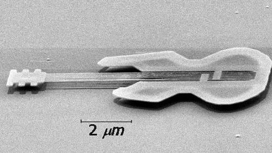

Cei care inspiră heliu (nu este toxic) vorbesc câteva secunde cu o voce schimbată, caraghioasă.
a. Cât te aştepţi să fie viteza sunetului în heliu, la temperatura camerei?
b. Gâtul şi gura unui om funcţionează ca o cavitate rezonantă. Care frecvenţe sunt favorizate în prezenţa helului, mai ridicate sau mai coborâte decât în aer?
Cum te aştepţi să "sune" vocea celui care a inspirat heliu: mai gravă sau mai "ascuţită"?
Dacă ceaiul din cană ţi s−a răcit, este oare posibil să−l încălzeşti doar vorbindu−i cu voce tare?
Cât timp ar trebui oare să−i vorbeşti cu voce tare, pentru a−i mări temperatura cu 100C?
Un difuzor generează în dreptul celui care ascultă un nivel de intensitate acustică de 100 dB.
Cât va fi nivelul instensităţii acustice, în dreptul celui care ascultă, generat de două astfel de difuzoare?
Răspuns:
103 dB. Nivelele acustice reprezintă o scară logaritmică prin dublarea intensitaţii acustice, nivelul acustic creşte doar cu 3 dB!
Imaginează (şi realizează) un experiment simplu, prin care să investighezi dacă undele sonore se pot propaga şi prin apă.
Leagă o lingură metalică la mijlocul unui fir de aţă lung de aproximativ 1 m.
Înfăşoară, de două ori, un capăt al firului pe degetul arătător al mâinii stângi şi celălalt capăt pe arătătorul mâinii drepte. Poţi ţine acum lingura suspendată, ca un pendul, de firele înfăşurate pe detgete.
Astupă−ţi, cu degetele pe care ai înfăşurat firul, "căpăcelele" din pavilioanele urechilor. Loveşte uşor lingura de marginea mesei.
Cum "sună"? Încearcă şi cu alte obiecte.
"Strecoară" o piuliţă hexagonală în interiorul unui balon.
Umflă balonul şi roteşte−l rapid, astfel ca piuliţa să înceapă să se rostogolească pe peretele interior al balonului.
Cum "sună"? Încearcă şi cu piuliţe de diferite mărimi. Care piuliţe generează sunete mai înalte: cele mari sau cele mici?
Răspuns parţial:
Rostogolirea unei piuliţe hexagonale generează perturbaţii în membrana balonului, la fiecare contact dintre un colţ al piuliţei şi membrana
balonului. Piuliţele având diametru mai mic se rostogolesc de mai multe ori la o parcurgere completă a circumferinţei balonului, generând astfel
frecvenţe mai ridicate.
Înregistrează vocile câtorva persoane cunoscute, precum şi propria voce. Poţi folosi aplicaţia Sound Recorder din Windows XP.
Poţi recunoaşte vocile înregistrate? Dar pe a ta? De ce oare?
Răspuns parţial:
Când vorbeşti, undele sonore ajung la urechea ta internă atât prin aerul care te înconjoară, cât şi prin propriul tău corp. Vocea ta ajunge la
ceilalţi (şi la microfonul cu care înregistrezi) doar prin aer. Aceasta înseamnă că înregistrarea vocii tale va avea altă compoziţie
spectrală, faţă de cea cu care te−ai obişnuit!
Utilizează monocordul pe care l−ai realizat şi găseşte proporţia între lungimile celor două porţiuni de fir care sună cel mai plăcut.
Intervalul de frecvenţe dintre doua sunete care "sună" împreună cel mai armonios este numit octavă.
Cât ai obţinut pentru raportul frecvenţelor de la capetele unei octave?
Cât te aştepţi să fie frecvenţa fundamentală a unui tub, deschis la ambele capete, care are lungimea 0,5 m?
Uneori ai de ales între produse similare, dar care generează nivele diferite de zgomot.
a. De câte ori îţi va părea mai silenţios un aspirator care generează 75 dB, în comparaţie cu unul care generează 85 dB?
b. Câte aspiratoare silenţioase, puse să lucreze deodată, generează acelaşi nivel de zgomot ca cel generat de un singur aspirator "zgomotos"?
Răspuns parţial:
10.
Cât te aştepţi să fie frecvenţa fundamentală de rezonanţă a unui tunel rectiliniu, lung de 1 km?
Răspuns:
Sub 0,17 Hz.
Printr−o tehnică asemănătoare cu cea prin care sunt realizate circuitele integrate, pot fi realizate pe o plachetă de siliciu obiecte complexe, cu dimensiuni microscopice (figura 1).

Fig. 1. Chitară microscopică.
Cât te aştepti să fie frecvenţa fundamentală pe care o poate genera coarda unei astfel de chitare, dacă viteza undelor în corzi este aproximativ 100 m/s?
Poţi auzi oare undele sonore provenite de la o astfel de chitară?